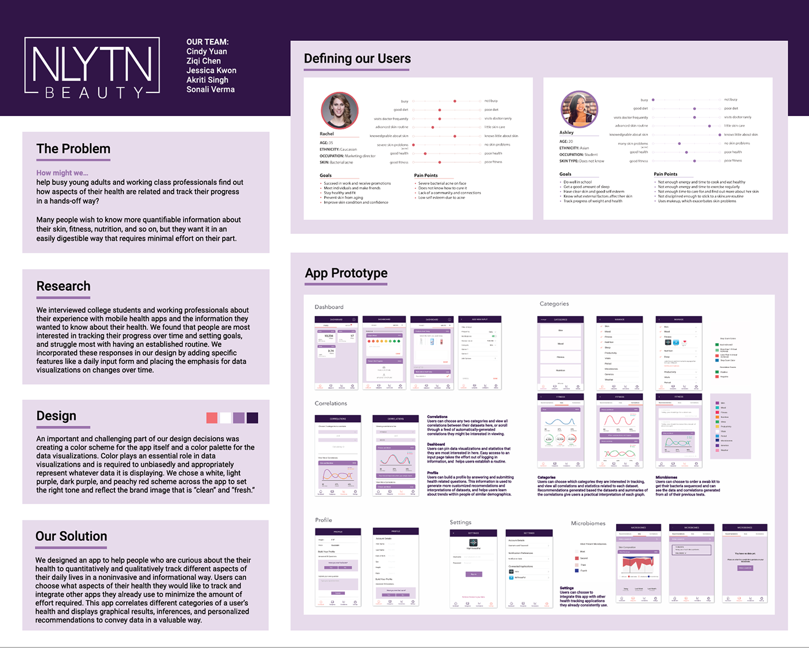

Smart Phage
View the Invision prototype here!
This semester, as part of a design consultant for Berkeley Innovation, my team partnered with Smart Phage , a health and beauty startup that focuses on developing products that eliminate harmful bacterial strains to improve acne and skincare. They wanted to create a health application to supplement their product.


#FCFCFD
#D66f72
#9073A9
#2F1C47

This semester, as part of a design consultant for Berkeley Innovation, my team partnered with Smart Phage , a health and beauty startup that focuses on developing products that eliminate harmful bacterial strains to improve acne and skincare. They wanted to create a health application to supplement their product.
The Problem
Many people wish to know more quantifiable information about their skin, fitness, nutrition, etc., but they want it in an easily digestible way that requires minimal effort on their part. Therefore, the research question we formulated was: How might we help busy young adults and working class professionals find out how aspects of their health are related and track their progress in a hands-off way? Specifically, our client wanted us to focus our research and application toward women, and therefore, they were our target audience.Research
We interviewed college students and working professionals about their experience with mobile health applications and the information they wanted to know about their health. From the surveys, we gathered our data and findings and found that people are most interested in tracking their progress over time and setting goals, and struggle most with having an established routine. We incorporated these responses in our data by adding specific features such as a daily input form and placing the emphasis for data visualizations on changes over time.
Personas
From our research data, we created two personas that could be representative of the potential users of our application, and identified their needs.
Our Solution
We designed an application to help people who are curious about their health to quantitatively and qualitatively track different aspects of their daily lives in a noninvasive and informational way. Users can choose what aspects of their health they would like to track and integrate other applications they already use to minimize amount of effort required. This application also correlates data from different categories of a user's health and displays graphical results, inferences, and personalized recommendations to convey data in a valuable way.Low Fidelity Mockups
Design
An important and challenging part of our design decisions was creating a color scheme for the application itself and a color palette for the data visualizations. Color plays an essential role in data visualizations and is required to unbiasedly and appropriately represent whatever data it is displaying. We chose an off-white, light, dark purple, and peach red scheme across the application to set the right tone and reflect a brand image that is clean and fresh.#D66f72
#9073A9
#2F1C47